codly.line
A generated row component that styles one displayed line in a Codly code block. Codly creates these rows while rendering codly.new; use the set/show wrappers here to configure their style.
Signature
codly.line(body, ..fields)body is required and positional. All other fields are named and optional.
Fields
| Field | Type | Default / required | Meaning |
|---|---|---|---|
body |
content | none |
Required | Content displayed in the row. |
radius |
length | none |
0.32em |
Corner radius for the row styling. |
inset |
length | dictionary | none |
0.32em |
Row padding; a dictionary accepts directional inset values. |
fill |
auto | paint | array<paint | none> | function | none |
(luma(240), none) |
Row background. A paint or none applies to every body row; an array cycles by displayed-row index; a function receives the row dictionary described below. auto restores the default palette. |
stroke |
stroke | none |
1pt + luma(240) |
Border around the row. |
highlights |
array<codly.highlight-config> | none |
none |
Character-level highlights for this row; see codly.highlight-config. |
smart-indent |
bool |
true |
Continue wrapped rows at their original indentation. |
block-label |
label | none |
none |
Label of the containing code block. |
reference |
dictionary | none |
none |
Internal reference details for an unnumbered source line. |
Behavior
The fill callback receives a dictionary with index, kind, source-line, and number. index is zero-based in displayed-row order, including a header or footer if present. kind is "code", "skip", or "callout" for callback rows. source-line is the one-based source line for code and callout rows, and none for generated skip rows. number is the displayed line number, or none for unnumbered and generated rows. Header and footer rows count toward the index but do not invoke this callback. Whole-line highlights take precedence over this fill.
codly.line-set_(..args) sets row fields with show:, while codly.line-show_(it => ...) replaces or wraps each generated row through a show rule. The show wrapper receives the row content as it, not a dictionary of field overrides.
Example
The slider changes the fill selected for code rows; the attached callout uses a separate fill.
#import "@preview/codly:2.0.0" as codly
#show: codly.line-set_(fill: row => {
if row.kind == "callout" { purple.lighten(80%) }
else if row.kind == "code" { rgb(255, row-green, 190) }
else { luma(238) }
})
#codly.new(
```py
let answer = 42
print(answer)
```,
callouts: ((line: 1, body: [The value is set here.]),),
)Edit & run on your device
The controls supply the example variables. Their definitions are hidden here; Copy code includes the current values and your edits.
